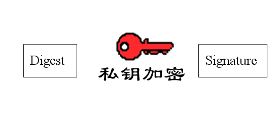
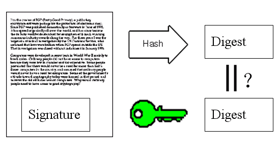
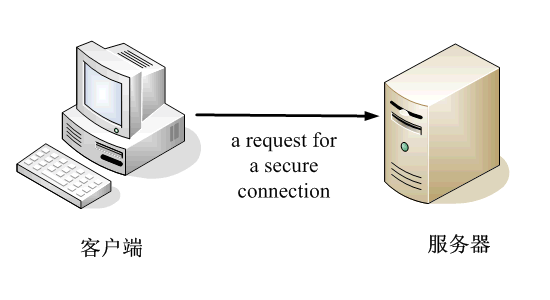

![]()

今天，我读到一篇好文章。
它用图片通俗易懂地解释了，"数字签名"（digital signature）和"数字证书"（digital certificate）到底是什么。
我对这些问题的理解，一直是模模糊糊的，很多细节搞不清楚。读完这篇文章后，发现思路一下子就理清了。为了加深记忆，我把文字和图片都翻译出来了。
文中涉及的密码学基本知识，可以参见我以前的笔记。
====================================================
数字签名是什么？
作者：David Youd
翻译：阮一峰
原文网址：http://www.youdzone.com/signature.html
1.

鲍勃有两把钥匙，一把是公钥，另一把是私钥。
2.

鲍勃把公钥送给他的朋友们----帕蒂、道格、苏珊----每人一把。
3.

苏珊要给鲍勃写一封保密的信。她写完后用鲍勃的公钥加密，就可以达到保密的效果。
4.

鲍勃收信后，用私钥解密，就看到了信件内容。这里要强调的是，只要鲍勃的私钥不泄露，这封信就是安全的，即使落在别人手里，也无法解密。
5.

鲍勃给苏珊回信，决定采用"数字签名"。他写完后先用Hash函数，生成信件的摘要（digest）。
6.

然后，鲍勃使用私钥，对这个摘要加密，生成"数字签名"（signature）。
7.
鲍勃将这个签名，附在信件下面，一起发给苏珊。
8.

苏珊收信后，取下数字签名，用鲍勃的公钥解密，得到信件的摘要。由此证明，这封信确实是鲍勃发出的。
9.

苏珊再对信件本身使用Hash函数，将得到的结果，与上一步得到的摘要进行对比。如果两者一致，就证明这封信未被修改过。
10.

复杂的情况出现了。道格想欺骗苏珊，他偷偷使用了苏珊的电脑，用自己的公钥换走了鲍勃的公钥。此时，苏珊实际拥有的是道格的公钥，但是还以为这是鲍勃的公钥。因此，道格就可以冒充鲍勃，用自己的私钥做成"数字签名"，写信给苏珊，让苏珊用假的鲍勃公钥进行解密。
11.

后来，苏珊感觉不对劲，发现自己无法确定公钥是否真的属于鲍勃。她想到了一个办法，要求鲍勃去找"证书中心"（certificate authority，简称CA），为公钥做认证。证书中心用自己的私钥，对鲍勃的公钥和一些相关信息一起加密，生成"数字证书"（Digital Certificate）。
12.

鲍勃拿到数字证书以后，就可以放心了。以后再给苏珊写信，只要在签名的同时，再附上数字证书就行了。
13.

苏珊收信后，用CA的公钥解开数字证书，就可以拿到鲍勃真实的公钥了，然后就能证明"数字签名"是否真的是鲍勃签的。
14.
下面，我们看一个应用"数字证书"的实例：https协议。这个协议主要用于网页加密。
15.

首先，客户端向服务器发出加密请求。
16.

服务器用自己的私钥加密网页以后，连同本身的数字证书，一起发送给客户端。
17.
客户端（浏览器）的"证书管理器"，有"受信任的根证书颁发机构"列表。客户端会根据这张列表，查看解开数字证书的公钥是否在列表之内。
18.

如果数字证书记载的网址，与你正在浏览的网址不一致，就说明这张证书可能被冒用，浏览器会发出警告。
19.

如果这张数字证书不是由受信任的机构颁发的，浏览器会发出另一种警告。
20.
如果数字证书是可靠的，客户端就可以使用证书中的服务器公钥，对信息进行加密，然后与服务器交换加密信息。
（完）
 twitter
twitter![]() weibo
weibo

towry 说：
太棒了，真的，非常有帮助，谢谢！！！
2011年8月 9日 20:51 | # | 引用
落水狗 说：
加上图片以后确实清晰了很多，这个真的很好。
2011年8月 9日 22:14 | # | 引用
33ad3 说：
说实话，还是有点迷糊
2011年8月 9日 22:16 | # | 引用
fenghanzhao 说：
还是有点模糊！没太明白！
2011年8月 9日 22:29 | # | 引用
Xtrats 说：
道格想欺骗苏珊，他偷偷使用了苏珊的电脑，用自己的公钥换走了鲍勃的公钥。因此，他就可以冒充鲍勃，写信给苏珊。
-----------
有鲍勃的公钥就可以冒充鲍勃？
道格自己不也有鲍勃的公钥么？“每人一把”。
2011年8月 9日 23:01 | # | 引用
阮一峰 说：
只有有了鲍勃的私钥，才能冒充鲍勃。
道格没有鲍勃的私钥，只好伪造鲍勃的公钥。
2011年8月 9日 23:22 | # | 引用
Michael.Z 说：
还是有些模糊，需要慢慢理解。
有一个问题，公钥和私钥的算法是一样的吗？为什么私钥加密可以用公钥解密？
2011年8月10日 01:36 | # | 引用
febird 说：
11.
"证书中心用自己的私钥，对鲍勃的公钥和一些相关信息一起加密，生成"数字证书"（Digital Certificate）。"
13.
"苏珊收信后，用CA的公钥解开数字证书，就可以拿到鲍勃真实的公钥了，然后就能证明"数字签名"是否真的是鲍勃签的。"
有个疑问，鲍勃的证书中鲍勃的公钥有没有被加密？
1. 如果加密了，则苏珊必须能从某个地方获取CA的公钥方能和鲍勃通信，这CA公钥要么随证书附送，要么预先存放在苏珊的电脑中。
2. 如果鲍勃的公钥被加密，同时CA的公钥也在证书中附送，那加密鲍勃公钥有什么意义？
3. 如果鲍勃的公钥被加密，且CA的公钥只是预先存放在苏珊的电脑中，那么经过其他未授权CA颁发的无效证书不能被解开，从而无法得到鲍勃的公钥，但这似乎不合理，举个例子，浏览器能够在HTTPS证书不在证书列表的情况下继续通信。
2011年8月10日 02:37 | # | 引用
史诗在线 说：
CNNIC也有根证书了，不过我把它屏蔽了。
2011年8月10日 02:40 | # | 引用
blue gene 说：
道格用自己的私钥加密发给苏珊的信件，苏珊收到信件后用道格的公钥自然能正常解密该信件，但是苏珊以为她收到的是鲍勃的信件，并且认为是用鲍勃的公钥来解密的，自然认为发信的就是鲍勃，所以道格就达到了伪造鲍勃与苏珊通讯的目的。
2011年8月10日 08:36 | # | 引用
ncsglz 说：
其实我觉得把三个人名换成中文名，会更容易理解一点，不然容易记不住，哈哈
大学的时候学过这玩意，当时也是一知半解，现在全明白了，太有用了
2011年8月10日 08:43 | # | 引用
ls zhao 说：
绝对的好文章，通俗易懂。分享了...谢谢
2011年8月10日 09:33 | # | 引用
xiongbo027 说：
既然道格可以替换鲍勃的公钥，为什么不能故技重施，伪造CA的公钥，然后用自己的私钥伪造成CA的数字证书，从而达到欺骗苏珊的目的呢？
2011年8月10日 09:50 | # | 引用
newuser 说：
1（前提是有权威的CA认证苏珊，保证确实是苏珊为鲍勃创造了数字证书）得先用苏珊自己的公钥检查鲍勃的数字证书，目的是为了证明苏珊创造了鲍勃的数字证书。
2在解密这个数字证书后，再检查是否鲍勃的数字证书由创造它的CA认证以及在创造鲍勃的数字证书时提供的关于鲍勃的相关信息是否发生了改变。
3帕特用通过解密数字证书得到的公匙（这个公匙苏珊为鲍勃创造数字证书所用的鲍勃的公匙）来检查鲍勃的签名，如果这个公匙确实能成功解密签名，证明确实这个签名是由鲍勃的私匙所创造，当然也证明了道格没有修改文档，因为MD没有变化。
道格确实有鲍勃的公匙，不过他用的是鲍勃的电脑和邮件，而且发给苏珊的是自己用鲍勃的姓名生成的key pair。
2011年8月10日 10:01 | # | 引用
CK 说：
xiongbo027 说：
既然道格可以替换鲍勃的公钥，为什么不能故技重施，伪造CA的公钥，然后用自己的私钥伪造成CA的数字证书，从而达到欺骗苏珊的目的呢？
==============================
其实我也有同上的问题，既然CA的公钥是公开的，那么有什么办法能保证别人无法替换掉CA的公钥呢
2011年8月10日 10:10 | # | 引用
Ciger 说：
公钥不需加密。
CA公钥无法伪造，因为CA公钥是可查的，比如在MSDN里可以查到微软用于签名driver的公钥（Base64码）。
2011年8月10日 10:17 | # | 引用
阮一峰 说：
CA都是一些可靠的大机构，它们的公钥在自己网站上提供下载，所以无法伪造。
2011年8月10日 10:27 | # | 引用
阮一峰 说：
我看到有的资料说，公钥被加密打包后，做成证书。
1. CA的公钥网上可以取得，浏览器中也有预存。
2. 证书必须用CA的私钥加密，如果能用CA的公钥打开，就证明确实是CA颁发的。
3. 我对HTTPS的一些实现细节不熟悉，但是我的理解是，如果HTTPS公钥不在浏览器列表内，浏览器可以从网上取得。
2011年8月10日 10:40 | # | 引用
玉沭林沣 说：
那么在下载到本地后，如何避免被替换的问题呢？感觉跟道格用自己的公钥替换鲍勃的公钥一样啊，假若苏珊每次也是重新下载鲍勃的公钥岂不是同样可以避免公钥被替换的问题，那么还要数字证书干什么？
2011年8月10日 10:46 | # | 引用
Yonny 说：
无法避免。
苏珊必须自己保证自己计算机的物理安全。如果别人已经可以直接控制你的计算机，修改根证书列表，那什么证书安全也救不了你。
2011年8月10日 11:13 | # | 引用
Yonny 说：
楼主把数据完整性和数据加密放在一起讲，会让人糊涂。
实际上，数字签名是保证数据完整性的，但它不保证数据加密，不保证数据传输途中无人嗅探窃听。
好比一辆敞篷大货车从A开到B，中途没有洒落任何东西，完整性得到了保证。但是车上有什么东西也被路人看光光。
数据加密是从A到B建了一条虚拟隧道，货车在里面开，路人谁也不知道是什么东西。
车子到了B后，送货的人给出自己的身份证，证明自己的确是从A来的。收货的人可以选择相信这个身份证。也可以把身份证放到自己的身份证校验仪查询，看看是不是公安部发的真的身份证。
如果你的身份证校验仪（CA）已经是假的了，那就啥都别说了，重装系统吧。
2011年8月10日 11:26 | # | 引用
Ciger 说：
“如果数字证书是可靠的，客户端就可以使用证书中的服务器公钥，对信息进行加密，然后与服务器交换加密信息。”
这里似乎有点问题。通常公开钥算法用于相互验证，之后会建立session key（比如128位AES key）。后续交互的信息都是用session key和对称加密算法（比如AES）来加解密的，已经与证书本身和公钥密钥无关。因为公开密钥算法比对称密钥算法开销大很多。不过HTTPS不了解，不敢定论。
2011年8月10日 11:33 | # | 引用
goool 说：
8.苏珊收信后，取下数字签名，用鲍勃的公钥解密，得到信件的摘要。由此证明，这封信确实是鲍勃发出的。
9.苏珊再对信件本身使用Hash函数，将得到的结果，与上一步得到的摘要进行对比。如果两者一致，就证明这封信未被修改过。
--------------
8 的说法有问题，只此一步，是无法确定信由鲍勃发出的。
必须 8 9 两步都完成了，才能确定：信由鲍勃发出，信未修改。
20.如果数字证书是可靠的，客户端就可以使用证书中的服务器公钥，对信息进行加密，然后与服务器交换加密信息。
-------------
Ciger 的说法是正确的。
为了速度起见，https 连接只在建立连接时，使用服务器的公钥加密，这个阶段是为了交换一个共享密钥。接下来的过程使用的是对称算法。
2011年8月10日 13:18 | # | 引用
mazhechao 说：
你说的对，就是这样的。
2011年8月10日 13:55 | # | 引用
mazhechao 说：
8的说法没有问题，就这一步就可以保证信由Bob发出的。因为消息是由Bob的私钥签名的，只有Bob本人才有他的私钥，所以能用Bob的公钥解密的，一定是Bob发出的。
8实现了抗否认性，9实现的是完整性。这是两个不同的概念。
2011年8月10日 14:03 | # | 引用
mazhechao 说：
私钥和公钥在算法上是等价的，只不过一个是private，一个是public。这个应该是由密钥生成算法保证的。
2011年8月10日 14:08 | # | 引用
mazhechao 说：
确实是被加密的（被CA的私钥加密），但这里的意义不在加密（数据的保密性），而是保证证书是由CA签发的。
2. Bob的公钥被用于后续的会话密钥（session key）交换时的加密传输。
2011年8月10日 14:14 | # | 引用
jlake 说：
用RSA加密解密的数学原理说明这一过程，可能更容易理解。
2011年8月10日 14:22 | # | 引用
玉沭林沣 说：
您说的有道理，我是想确认一下数字证书和数字签名它们各自的作用是什么，因为从阮一峰这篇文章里看到的信息貌似是数字证书是为了确保数字签名的真实性而产生的，但实际情况可能不是这样。
2011年8月10日 14:30 | # | 引用
jlake 说：
http://zh.wikipedia.org/wiki/%E5%85%AC%E5%BC%80%E5%AF%86%E9%92%A5%E5%8A%A0%E5%AF%86
维基百科上的说明，比较容易理解。
假设两个用户A，B进行通信，公钥为c,私钥为d，明文为x.
A用公钥对明文进行加密形成密文c(x)，然后传输密文；
B收到密文，用私钥对密文进行解密d(c(x)),得到要通信的明文x。
补充：
如果是 A 同时和 B, C 通信，如果C的私钥为e
C收到密文，用私钥对密文进行解密e(c(x)),得到要通信的明文x。
c 是公钥, d、e 是私钥。用不同的私钥解密，能得到同样的结果。
这个过程通过很巧妙的数学来实现。
2011年8月10日 14:30 | # | 引用
goool 说：
@mazhechao 原文的 5 6 7 8 9 是一个完整的签名场景，请在这个场景下重新考虑一遍。然后重新看一下 8 的表述：
实际上 Bob 的 “数字签名” 可以用任何人的公钥解密，得到一个 hash 值。如果不加上第 9 步（比对原文的 hash值）。这个第 8 步得不到任何有价值的信息。
2011年8月10日 14:46 | # | 引用
dindog 说：
我也觉的这篇文章翻译失准了。
2011年8月10日 15:12 | # | 引用
ssdt 说：
有ca也没用，cnnic现在在ca里了
cnnic可以伪造别人的ca然后利用窃取的公钥对信解密
公钥也可以被窃取，窃取了不就可以解开信了
把身份授权给ca也没用，只有法治国家才行
2011年8月10日 16:01 | # | 引用
ssdt 说：
只要操作系统有后门，什么签名也没用
操作系统的后门可以作为进入一个国家市场的筹码
你以为微软是可以相信的吗
2011年8月10日 16:06 | # | 引用
eggcalm 说：
13.
苏珊收信后，用CA的公钥解开数字证书，就可以拿到鲍勃真实的公钥了，然后就能证明"数字签名"是否真的是鲍勃签的。
----------------------------
在这里，CA的公钥会不会被道格用假的CA公钥替换掉？如果可以，那么道格就可以像[10]中那样向苏珊发送假的数字证书，达到冒充鲍勃的目的。
2011年8月10日 16:51 | # | 引用
mazhechao 说：
2011年8月10日 17:11 | # | 引用
eggcalm 说：
我不这么认为，我认为第8步的价值就在于，苏珊能确定这封信是鲍勃发出的（虽然不确定信的内容是否被窜改过），因为如果不是使用鲍勃的私钥加密，苏珊使用鲍勃的公钥不可能解密成功。
2011年8月10日 17:17 | # | 引用
wqfeng 说：
真不错。后面那个HTTPS的例子是译者加的吧？原文中没有。
2011年8月10日 17:45 | # | 引用
goool 说：
在原文第 8 步的场景里，所谓的“解密”只是一次数学运算（典型算法RSA）。输入是 signature 和 某个人的公钥，输出是一个 hash 值。重申一次，得到的这个 hash 没有任何价值。因为可以用任何人的公钥参与这次运算。
以上可以简单归结为：没有原文的数字签名是没有价值的。
2011年8月10日 17:50 | # | 引用
mazhechao 说：
@goool：
价值就在于我能解开这个签名，能够解开这个签名本身就是有意义的——消息是Bob发出的，Bob不能否认消息是他发的，不是Bob的人也不能说是他自己发的，即实现了数据的抗否认性。至于hash值不hash值的，其意义体现在第9步，实现的是数据的完整性。这是两个完全不同的概念。原文分两步阐述，没有任何问题。
2011年8月10日 18:52 | # | 引用
goool 说：
@mazhechao
我不知道你所说的“解开签名”是什么意义，它只是一步数学计算而已。
让我们更细致地看一下“验签”的过程：
1: 输入签名和公钥，算出 hash 值 h1;
2: 输入原文，算出 hash 值 h2;
3: 比较 h1 和 h2，发现 h1 和 h2 相等。在这一步上，我们开始推理，得出原文是 bob 发出且没有修改过。也就是你说的抗抵赖和数据完整。
请注意，这两个有价值的结论都是第三步得出的。
原文第 8 步和你都认为：经过第 8 步的计算，即可以得出原文由 bob 发出的结论。这是错误的，实际上1 2 两步只是可以交换顺序的两个计算步骤，它们不是任何有价值结论的充分条件，连必要条件也不是。
2011年8月10日 21:07 | # | 引用
lewis 说：
http: the definitive guide 有一章是专门讲 https 原理的，比较透彻。
2011年8月10日 22:41 | # | 引用
雨下路人 说：
总的来说这篇文章是很有价值的，但是翻译的还不让人满意，首先化名用的那几个中文名字不容易区分，容易混淆，鲍勃和道格还是谐音！ 读着费劲！ 两外最后相关背景没有交代清楚，以及某些语句没有把逻辑关系表达得足够清晰（“道格想欺骗苏珊，他偷偷使用了苏珊的电脑，用自己的公钥换走了鲍勃的公钥。”起初理解为道格把鲍勃手上的公钥换走了，乱乱的，仔细琢磨语句，才明白意思是：道格用自己的公钥换走了鲍勃送给苏珊的公钥……） 总之我觉得这篇文章如果要让更多的人收益，传播的更“远”，还需要好好“返修”一下！ 完。
2011年8月11日 00:56 | # | 引用
xy 说：
2011年8月11日 04:50 | # | 引用
sfumato 说：
最后一段HTTPS的讲解和http://blog.leezhong.com/tech/2011/02/19/https-workflow.html 上的讲解有出入，无网不剩的讲解HTTPS是用非对称来加密对称密钥，然后拿对称密钥对网页加密（这样解密速度快），我相信他的解释是正确的，博主能解释一下吗？
2011年8月11日 10:16 | # | 引用
涎弟 说：
鲍勃会给苏珊的信？不加密？明文？第七步只是把signature附上了 原文呢？不做任何操作？？？？
2011年8月11日 10:59 | # | 引用
Ivan 说：
好文章，需要一点时间来理解
2011年8月11日 17:29 | # | 引用
abc 说：
@goool：
看了你的１，２步和前几个回复(实际上 Bob 的 “数字签名” 可以用任何人的公钥解密，得到一个 hash 值。如果不加上第 9 步（比对原文的 hash值）。这个第 8 步得不到任何有价值的信息。 特别是这个)，好象你不懂公钥和私钥的原理吧，公钥和私钥是一对的，某个私钥加密的内容只有这个私钥所对应的公钥才能解开，其他的公钥是解不开的,反之亦然
不然怎么叫密码学呢
2011年8月11日 17:30 | # | 引用
路灯时代 说：
去年有幸上过台湾的信息安全老师讲的数字签名这块的课，是学校搞的什么和台湾学校联合课程。用的是志明和春娇的做为例子。
内容讲的更为详尽，课件应该还在。不过是专门面向密码学研究的内容。
2011年8月11日 17:47 | # | 引用
goool 说：
看来不止一个人误会了“解得开”“解不开”的问题。
设想一个签名场景，我们叫“理想中的签名”：Bob 直接用自己的私钥对原文加密，把结果发送给 Alice，Alice 用 Bob 的公钥去解密，得出原文。在这种情况下，的确存在一个“解开”或“解不开”的问题。如果 Alice 用别的什么人的公钥去解密，这次计算仍然能得出一串符号，但是结果没什么意义，这就是你说的“解不开”。
但实际中为了效率起见，被广泛应用的签名是这样的：Bob 对原文做一次 hash，然后用私钥对 hash 值加密，加密得到的结果我们称之为“签名”，然后把原文与“签名”发给 Alice。
Alice 首先作的计算（也就是原文的第 8 步）是用 Bob 的公钥对“签名”作一次解密，从而得出一个有待于与第 9 步得出的结果相比较的一串符号。
这串符号有什么意义么？
没有。
与原文有什么关系么？
看不出来。
通过这次计算，Alice 能不能断定“签名”是 Bob 发出的呢？
不能。因为**如果用别的什么人的公钥参与这次计算，同样能得到一个符号串，也同样看不出什么意义**。
所以，这一步计算没有所谓的“解得开”“解不开”的问题。
这就是为什么原文第 8 步是错误的，原文说：
Alice 的确得到了一个被暂时当作是原文 hash 值的符号串，但这个符号串还有待接下来的比对。这句话里的因果关系是不成立的。
2011年8月11日 18:33 | # | 引用
啊啊呵 说：
@goool：
汗，第八步如果用别人的密钥解密的话会报错，一报错就知道你用的密钥不对了。。。。你真的先看看密码学原理吧。。。。别人已经说的很详细了，8，9有着分别不同的意义
2011年8月12日 11:10 | # | 引用
abc 说：
@goool：
贴个wiki百科上的说明，这就是文章说的第九步，你自己好好理解一下。。。一个是解密得到的值(也就是第八步的值)，一个是自己计算得到的值，再说一边，第八步如果用别人的密钥解密的话是会报错的，也就是得不到结果，而不是你所说的能得到一个hash值，至于加密解密的原理，wiki百科上也有，你可以看一下
签名消息
RSA也可以用来为一个消息署名。假如甲想给乙传递一个署名的消息的话，那么她可以为她的消息计算一个散列值(Message digest)，然后用她的密钥(private key)加密这个散列值并将这个“署名”加在消息的后面。这个消息只有用她的公钥才能被解密。乙获得这个消息后可以用甲的公钥解密这个散列值，然后将这个数据与他自己为这个消息计算的散列值相比较。假如两者相符的话，那么他就可以知道发信人持有甲的密钥，以及这个消息在传播路径上没有被篡改过。
2011年8月12日 11:26 | # | 引用
goool 说：
以 RSA 算法为例。
拿其它人的公钥去解 Bob 的签名会发生什么，与 RSA 的原理无关，与具体的算法实现有关。从 RSA 的原理来说，所谓“公钥”“私钥”在数学上没有区别，所谓的“加密”、“解密”、“签名”、“验签”本质上是一回事，只是一个乘方和一个取模运算。
报错，报什么错，为什么报错？因为标准实现下，Bob 要对他的信息进行编码和填充。用别的人的公钥解密，会因为填充的字节不对而无法继续计算，或无法从计算结果提取出字符，或与 hash 串规则不符，大多数实现会在此处返回错误或抛出异常。
但是，RSA 从原理上并没有保证这一点，因为它只是三个数字参与的计算而已：把一个数与另一个数作乘方运算，然后除以第三个数，得到余数。
我们完全可以采用另一套字符编码规则、字节补齐规则、以及另外的 hash 算法，让其他人的公钥参与这次计算，也能得到一个符合规则的 hash 值。
所以从逻辑上，Alice 不能作出这样的推理：用 Bob 的公钥对签名作了一次计算，就断定签名是 Bob 发过来的。
2011年8月12日 16:16 | # | 引用
风逐蓝天 说：
不错的科普文，只是感觉还不够通俗易懂。。。。
2011年8月12日 17:35 | # | 引用
abc 说：
你试一下就知道了啊，用别人的密钥试试看啊，看看会不会报错，你说说的那些什么取模比较数值都在解密也就是第八步里面包含了。。。
2011年8月12日 17:53 | # | 引用
Jak 说：
不错不错，很形象~ 菜鸟们稍微了解下就好了。
对于 CA 证书的伪造问题……无可避免，谁知道会不会有木马把证书改掉呢。
2011年8月12日 18:37 | # | 引用
mazhechao 说：
我怎么觉得我开始有点理解goool的意思了。。。
2011年8月12日 22:46 | # | 引用
阿迪 说：
什么意思啊？
2011年8月12日 22:57 | # | 引用
abc 说：
他的意思就是把8，9步误解成解密的过程，其实第八步解密已经包含取模比较等步骤了
2011年8月15日 09:27 | # | 引用
peeekkk 说：
应该是说，用Alice用随便什么公钥解密，也会有一点点几率解密成功。所以不能认为解密成功，就100%确定签名的正确，有可能中彩票
2011年8月15日 17:43 | # | 引用
abc 说：
那到是，只要那个质数被猜到就行了，虽然希望很渺茫。。。
2011年8月16日 10:37 | # | 引用
fan0219 说：
第八那里，我提一点异议。。苏珊收到信后，用公钥检验数字签名，用鲍勃的公钥解密摘要。不是由此可以验证这封信是由鲍勃发出的。。而是可以由此验证这封信的数字签名是有效的。。这封信，可能是由鲍勃发给A。然后A冒充鲍勃发给B。
第十一文字部分大概也有错误。。鲍勃提交自己的公钥和个人信息给CA（数字证书认证中心），并不需要提供苏珊的私钥。
然后我想问问，网页要是使用https加密浏览是不是，速度会比http慢很多。
要是文章后面能够总结一下公钥和私钥、数字签名、CA、数字证书的作用那就好了、、、、
2011年8月16日 17:39 | # | 引用
Maple 说：
我也写了篇理解密码学的公钥和私钥的文章，以ssh免密码登陆作为载体 http://www.lovemaple.info/blog/2011/08/ssh-remote-sever-without-password/
2011年8月18日 18:10 | # | 引用
Mr Wind 说：
如果鲍勃是亲手通过U盘把他的公钥交给苏珊的，那上面的讨论就不需要了；但如果是通过网络介质来传输，就存在着两个问题：1该公钥是鲍勃自己发的，还是有人冒充鲍勃发的，这是身份确认的问题，2该公钥是不是被人掉包或修改，这是公钥完整性的问题。（PGP软件中公钥的生物属性就很好地解决了上面的问题，通过电话用一些单词来与鲍勃核对公钥的完整性，其实是核对该公钥的指纹。）基于上面的原因要引入根证书。如果苏珊的电脑是盗版（她电脑中受信任的根证书已被恶意调换），或者她的电脑中受信任的根证书的已被黑客修改，也不排除CNNIC使坏的可能，再加上网页劫持，那苏珊个人电脑的https://……就有很大的风险。
2011年8月20日 10:07 | # | 引用
finian 说：
注意这里所说的“用自己的公钥”，不是鲍勃给道格的那支，而是道格自己伪造的另一支
2011年8月20日 14:19 | # | 引用
Qujer 说：
我竟然看懂了！！！
2011年8月21日 21:12 | # | 引用
fan0219 说：
Mr Wind的评论好精彩啊。。我学过几个星期网络安全，对公钥密钥这块看的很有趣味。Mr Wind 盗版系统根证书被修改的例子很意思！！
继续关注文章的评论。。
2011年8月23日 00:35 | # | 引用
太道 说：
solidot有个类似的劫持证书的案例 http://internet.solidot.org/article.pl?sid=11/08/31/078252
2011年9月 8日 04:04 | # | 引用
卢达 说：
这叫“非对称加密”
2011年9月16日 10:33 | # | 引用
卢达 说：
只是，常见的在线邮箱缺少对 s/mime 的支持啊
2011年9月16日 10:41 | # | 引用
riefuy 说：
读了这篇文章，获益匪浅。
也非常同意gool的观点，如果数据完整性得不到保证，怎么保证不可否认性？也就是数据被修改了，还能说是本人发出的吗？
2011年10月13日 22:44 | # | 引用
ly 说：
bob给他们每人一把的公钥是不是是一样的？如果是，那么信件被道格截取到，是不是就同样被解密了！
2011年10月17日 16:01 | # | 引用
精英一客 说：
呵呵，这个我之前也不是很懂。但是，如果你从证书的用途上去理解，比如私钥的目的是什么，公钥的目的是什么，这样的话会理解的很快
2011年10月24日 16:06 | # | 引用
阿萨德 说：
银行的u盾属于私钥还是公钥，要是公钥每个u盾的内容是不是一样的呢
2011年11月 3日 09:35 | # | 引用
HahA 说：
其实是道格用自己的公钥（不是鲍勃给他的，是他自己的公钥）替换了苏珊的鲍勃公钥（注意是替换，原文翻译成换走可能对你理解产生了误导）。之后道格用自己的密钥加密信件发给苏珊，苏珊用假的鲍勃公钥（实际上是道格公钥）解密信件，发现信息正确，便以为是鲍勃发来的信件，于是道格实现了伪装成鲍勃欺骗苏珊的目的
2011年11月 4日 20:43 | # | 引用
lich 说：
想这个过程的时候，如果略掉生成摘要的Hash函数貌似会更清晰些。
1 alice使用私钥对一份合同生成签名，同时把合同和签名发给bob。
2 bob收到后，使用公钥对签名解密生成一段文本。对应步骤8。
3 bob对比收到的合同和解码生成的文本。如果相同，则确定是来自alice。对应步骤9。
这里不能完全通过是否能解码成功来判断数据是否来自alice。
假设我使用自己的密钥对一段数据生成签名，发送给bob。bob使用alice的公钥解码，结果碰巧能解开，解开的数据有可能是乱码，无法阅读，但如果再碰巧看起来像一份合同。所以必须同时和收到的数据进行比较。
2011年11月17日 18:16 | # | 引用
jieson79 说：
如果道格在网络上截取了BOB给苏珊的信，是不是就可以得到其中的内容？
2011年12月 1日 20:49 | # | 引用
晴天娃娃 说：
如果第三方冒充发送方发出了一个文件，因为接收方在对数字签名进行验证时使用的事发送方的公开密钥，只要第三方不知道发送方的私有密钥，解密出来的数字签名和经过计算的数字签名必然是不相同的，这酒提供了一个确认发送方身份的方法。
2011年12月 2日 23:13 | # | 引用
hui 说：
作者对公钥，私钥谁加密谁解密的解释似乎是有点问题的：
“Public-key cryptography refers to a cryptographic system requiring two separate keys, one to lock or encrypt the plaintext, and one to unlock or decrypt the cyphertext. Neither key will do both functions.”
参考链接在这里：
http://en.wikipedia.org/wiki/Asymmetric_encryption
2011年12月21日 21:28 | # | 引用
shanshan 说：
有个地方不明白，既然苏珊可以用鲍勃的公钥进行解密，看到鲍勃的信件内容，那道格他也有鲍勃的公钥呀，那他也可以看到鲍勃写给苏珊的信件内容罗。
2011年12月22日 13:15 | # | 引用
张永 说：
图形并茂，讲的真是太好了，o(∩_∩)o 哈哈
2012年3月25日 15:26 | # | 引用
辛盈 说：
看了这么多评论，我发现很多人没有搞清楚加密和认证的区别：
加密：公钥加密、私钥解密
认证：私钥加密、公钥解密
首先要搞清楚一个操作的目的是什么，目的是加密数据还是认证作者。
2012年3月26日 13:23 | # | 引用
Vaporz 说：
我的理解，道格给苏珊的是自己私钥生成的公钥，但因为苏珊不知道这是道格的公钥，就以为是在跟鲍勃通信。而且因为是道格私钥生成的公钥，所以道格可以正常的加密解密消息
2012年5月 8日 11:29 | # | 引用
lzm 说：
文章很好，很容易理解。但我对图11有一些看法。
就你所说
"后来，苏珊感觉不对劲，发现自己无法确定公钥是否真的属于鲍勃。她想到了一个办法，要求鲍勃去找"证书中心"（certificate authority，简称CA），为公钥做认证。证书中心用自己的私钥，对鲍勃的公钥和一些相关信息一起加密，生成"数字证书"（Digital Certificate）。"
认证中心对所有的信息进行了加密，那我所理解的数字证书将是一个密文串，那当得到这个密文串证书，我根本就不能知道是哪个ca对用户信息进行的加密，认证时也不知道用谁的公钥对证书进行解密。
我理解的证书是可以公布开的，所以用户的所有信息是不必要加密的。ca所需要做的工作只是对整个用户明文信息进行认证，也就是取摘要，再对摘要就行私钥加密。
没有找到相关的资料，不知道对不对，还请作答，谢谢。
2012年5月14日 11:38 | # | 引用
乜都5识 说：
是篇好文章，但是，觉得文章并没有作者一开头说的那样好啊。
2012年8月19日 00:59 | # | 引用
爱国者 说：
但Alice已经知道采用哪种公钥密钥算法了，因此如果使用Bob的公钥无法解密，那么可以推定消息不是Bob所发
2012年10月 1日 23:08 | # | 引用
Jeremy 说：
当"我"给Bob发信的时候,我的信是公开的,未被加密的,因为加密也没有意思啊,原因就是很多人有我的公钥.
但关键是,怎么才能让Bob看见我的信是原版,未经删减的.所以需要对原文Hash一下得到Y.
当Bob收到信后,用"我"的公钥解开签名,得到Y.然后Bob需要对原文Hash一下,得到M,
这个时候,对比Y与M.才能确保数据是安全的.
这里的安全包括:是由"我"发出去的,并且中途未被修改.
2012年10月14日 01:48 | # | 引用
Jeremy 说：
这样的啊.本来就这个样子的.全是道格看不见苏珊给鲍勃的信.
对应到计算机上就是:Server 发给 Client 的数据是可以被截获的.
2012年10月14日 01:51 | # | 引用
Jeremy 说：
在第8步上,goool 说法是正确的.
譬如说,我们可以想像一下这个情况:Bob写了封信(包括原文和签名)给Lily,然后Lily对原文做了些修改,再把这封信转发给了Alice. Alice当然是可以对这个签名解密的.因为他有Bob的公钥啊.但是我们不能说,这封信是由Bob发给Alice的,因为这封信的直接受体应该是Lily.
2012年10月14日 01:56 | # | 引用
亭子 说：
非常赞，学到了好多东西，您的博客我非常喜欢看，请问是否可以做一个Android版的应用呢？这样，我们随时随地都可以看了。
如果有需要，我可以做这个android应用。
2012年10月16日 13:13 | # | 引用
暗影吉他手 说：
我非常统一goool的看法。对于解密来说不存在“解密失败”这种说法。一般来讲的“解密失败”是指解密后的明文（不管是用对称密码还是非对称密码）仍然是无意义的文章，但是对于数字签名来说，不管解密后的hash是否正确，它都是一串无意义的hash值，单就这步来说根本看不出来是不是“解密失败”了。
再强调一遍，根本不存在“解密失败”这种说法。
2012年11月 4日 01:05 | # | 引用
spraith 说：
我觉得之所以第8步有些问题，是因为Bob在制作数字签名那一步没加上一些更详细的说明，比如，第6、7步制作签名时，同时把Bob的个人信息和信件摘要并到一起再用私钥加密的话，在第8步苏珊用公钥解密后，就确实能知道此信件是由Bob发出的了，然后第9步通过hash函数也可以验证信件是否被修改过。而且根据第8和第9步所做的事情来看，我觉得作者的原意非常可能就是这样的，他只不过在第6 7步时漏掉了把Bob的个人信息也一起加入数字签名中。
2012年11月10日 16:07 | # | 引用
小乖 说：
银行专业版 usb key里面存储的是什么信息,是客户端私钥,和客户端证书,还是服务器端证书.怎么和银行的服务端通讯的,我怎么都没想清楚?
2012年12月21日 17:36 | # | 引用
小乖 说：
道格的公钥和苏珊的公钥不都是 鲍勃送的吗,不是一样的吗
2012年12月21日 17:40 | # | 引用
arlen 说：
之所以会觉得第8步有问题，是因为翻译的时候有一句重要的话没有翻译出来，原文是这样的：
Pat's software decrypts the signature (using Bob's public key) changing it back into a message digest. If this worked, then it proves that Bob signed the document, because only Bob has his private key.
2013年3月 8日 10:35 | # | 引用
teddywu 说：
“道格用自己的公钥换走了鲍勃送给苏珊的公钥” 是指 道格用道格的公钥（不是鲍勃给道格的公钥） 替换掉了鲍勃送给苏珊的公钥。
2013年3月16日 21:41 | # | 引用
刀尖红叶 说：
好文章～
2013年3月20日 19:08 | # | 引用
shfqbluestone 说：
峰哥的文章写的非常好，通俗易懂！
2013年3月27日 13:26 | # | 引用
JohnK 说：
第8步确实有问题，仅由签名解密得到的结果是没法判断签名者身份的。
举个例子：（假设不考虑对明文的加密）
Alice 发送一串附带签名的明文给 Bob，格式如下：
TEXT SIG1
明文 签名
现在 Eve 截获了这段信息，并伪造为：
TEXT SIG2
明文 签名
Bob 收到信息，抛弃明文不看，对 SIG2 使用 Alice 的公钥解密，得到了 DIG2。
但他并不知道正确的 HASH(TEXT) 是什么，也就不知道得到的 DIG2 到底对不对，那么怎么判断发送者的身份呢。
不可抵赖性的实现是 依赖 TEXT 和 SIG 共同实现的。
假设 Eve 想篡改 Alice 的信息为：
TEXT2 SIG2
明文 签名
SIG2 应＝ RSA (Alice的私钥, HASH(TEXT2))
这样才能骗过 Bob 以为这封信息来自 Alice。
但 Alice 的私钥 Eve 并没有，因此他伪造不出签名。
因此当 Bob 验证过签名（相对明文）正确后，就认为这封信是 Alice 发送的。而不与明文相对是不成立的。
至于使用 Alice 的公钥去解密 Eve 伪造的签名会不会报错，则一定意义上依赖于加密算法。起码 RSA 这种幂乘和取模运算是不会有任何报错的。
2013年5月 8日 21:33 | # | 引用
大神 说：
2013年7月 7日 10:46 | # | 引用
George Chen 说：
第5点，Bod决定采用 数字签名。
为什么Bod要用数字签名，应该说明下，这里Bod是为了证明自己是Bod，即这是认证过程 而非 加密过程
2013年11月11日 22:04 | # | 引用
Chil 说：
我也正好有这个疑问,如果苏珊收到信件后能用道格的公钥解密,这岂不是每个拥有道格公钥的人都能对信件解密?都能看到信件的内容?这样的话通信就不安全了.
2013年11月16日 07:42 | # | 引用
Chil 说：
如果是这样的话那通信就不安全了.就比如Bob将信息用自己的私钥加密发给suzan，但是很多人都有Bob的公钥，那岂不是有Bob公钥的人都可以解密看到信息？
2013年11月16日 07:55 | # | 引用
SelfMedicated 说：
转牛角了。同意m
2014年1月14日 15:58 | # | 引用
SelfMedicated 说：
2014年1月14日 16:17 | # | 引用
御宅暴君 说：
大哥，假设私钥为 (d, n), 公钥为 (e, n), 那么通过前者加密后，若要解密，所用到的 e 就必须满足 ed ≡ 1 (mod φ(n)) 公式了 。当然就几乎只有原来那个公钥 (e, n) 的 e 满足其条件，所以不是任何公钥都可以解的。毕竟如同其它前辈指出的，你拿别的公钥去计算，就因为会满足不了该条件而出错。你可以再好好地通过阮一峰的《RSA 算法原理》补习下。
如果要找出同样满足该公式其它的 e 也不是不可以，但其算法复杂度就和用公钥加密私钥解密的情况一样了。归根结底，公私钥的确可互换，且无法通过其中一个钥匙能在可接受的成本下计算出另一个钥匙，也难怪 RSA 深得『非对称』的真谛了。
2014年2月 5日 21:35 | # | 引用
御宅暴君 说：
发现评论中有不少人被 goool 误导了... 汗。
且不说这个，有人质疑既然也可以用私钥加密用公钥解密，那么因为公钥是公开的，岂不是人人都可以解开被私钥加密的数据了？
但是！谁告诉你用私钥加密是为了不让他人窥探明文数据了？这做法不是为了保密，而是在于『认证』！即验证『我所使用的公钥』与『对方加密时所使用的私钥』是否构成一对符合 RSA 算法原理的公私钥。如同我上一条评论指出的，试图使用其它公钥来解密就几乎会出错。
但是私钥就只有对方一人知道了，就拿正文中例子来说。只要对方确确实实是鲍勃，从而私钥的确也是鲍勃所使用的。于是只要『苏珊所手上的公钥能对对方发过来的数据进行有效解密』，那么就证明了这公钥的确是与对方，即鲍勃使用的私钥构成一对公私钥。这就所谓的『认证』了。
但是，万一对方偏偏不是鲍勃而是道格，且已经偷偷把苏珊手上的公钥换成道格的公钥了呢？这个公钥当然就与道格所有用的私钥构成有效的一对公私钥，于是道格的确就可以在苏珊完全不知情的情况下，假装成鲍勃并与她通讯。其实这问题就要通过 CA 来解决了，正文的后续当然也是围绕此而展开的。
这地方阮一峰先生的确讲的不够好，没明确好『加密』和『认证』的区别，仍未尚未彻底掌握 RSA 算法的同学的确很容易被弄糊涂甚至陷入误区。
2014年2月 5日 21:56 | # | 引用
liuruoze 说：
讨论好激烈啊，其实这篇科普文非常不错，非常明晰。但是想要真正理解还需要读更专业的文章。有些同学连加密与认证这两个基本过程都不懂，看了自然云里雾里。我觉得这篇文章主要说明的是签名和数字证书的区别与关系。
另外，https传输内容是确实是对称加密算法。还有，看这篇文章时务必先了解对称加密算法与非对称加密算法的基础知识。
2014年2月26日 10:48 | # | 引用
zhanlang 说：
如果道格也去认证了自己的证书，并且用自己的公钥换了bob的公钥，每次通信的时候发自己的证书过去，结果就是一切验证都没有问题，但是苏珊却以为自己在跟bob通信，实际确实跟道格通信， 我的意思是如何辨别证书所有者跟你要通信的目标是同一个人呢？
2014年3月12日 14:40 | # | 引用
Colin356 说：
英文与中文在表达的逻辑上还是不同的，喜欢谨慎的接受概念和原理的人还是改天再看看原文吧~
2014年3月17日 02:19 | # | 引用
xinxinyu 说：
门外汉猜测。CA认证是收费的，可能会保证不会被恶意替换。网站和证书是一一对应的。a.com - public1 b.com - public2 可能像hosts那样的列表。
2014年3月30日 17:24 | # | 引用
heramerom 说：
你说的 ‘并且用自己的公钥换了bob的公钥' 是指道格偷偷用了苏的电脑，把里面的公钥换成自己么。可是文中说CA认证后，是把公钥放在传送的信息中的，而不是保存在苏的电脑上得。
2014年5月13日 17:55 | # | 引用
richard 说：
怎么又变成了Bob的私钥了哈？Susan不是用Bob的公钥来解密的么？
另外还有点疑问就是为啥被替换为假的Bob公钥后，不能鉴别出来哈？不是可以将假Bob公钥解密的digest与原文hash之后比较，来判断内容是否一致么？如果是假的，digest会匹配不上哈，不是就不需要数字证书了哈？
还请您指教：）
2014年5月14日 14:45 | # | 引用
richard 说：
是不是说，如果解密的公钥不对了，是不能执行解密过程的，如果能执行解密就一定是bob的公钥了？
2014年5月14日 14:53 | # | 引用
liuinsect 说：
那，“证书中心用自己的私钥，对鲍勃的公钥和一些相关信息一起加密，生成"数字证书"（Digital Certificate）”
证书中心怎么保证这个是 鲍勃的公钥 而不是其他人的？
2014年5月22日 16:55 | # | 引用
呆瓜路 说：
谢谢院一峰先生的讲解，一目了然，通俗易懂。。
2014年7月15日 10:03 | # | 引用
etnlona 说：
help a lot,thanks~!!!
2014年7月17日 16:58 | # | 引用
zyj 说：
对收到的信件进行hash，得到的怎么可能跟对签名进行的hash的结果相等呢？？？？？
2014年8月25日 09:57 | # | 引用
Leon 说：
2014年9月23日 10:25 | # | 引用
刘哈哈 说：
=================================
说下我个人理解：CA的公钥是放在网站上的，当需要使用的时候在网站上进行下载，这样就能保证每次使用的CA公钥是不可能被替换的正确的公钥
2014年9月29日 15:40 | # | 引用
阿凡提 说：
文中第三步，苏珊给鲍勃写信，
鲍勃 怎么确定这封信就是来自苏珊的？？
2014年10月24日 15:12 | # | 引用
yuntauy 说：
加密和完整性确实稍作区分更好。
Bob持有私钥，Susan有公钥。
Susan ----> Bob, 数据是加密的，因而也是没被修改的。
Bob ---> Susan, 数据是公开的，但是能保证是没被修改的。这时Susan实际上可以是公众中任何一个人。因为Signature是不能被修改的（修改了解不出来），进一步保证了Digest没被修改，再进一步保证信件没被修改。实际上在原理上Bob可以直接对给Susan的回信加密，这也能保证信件没被修改。但当信件的体量太大时，直接加密就不可取了。
2014年11月 7日 15:42 | # | 引用
纳信 说：
其实wikipedia上的这幅图就能完全说明清楚了
http://en.wikipedia.org/wiki/Digital_signature#mediaviewer/File:Digital_Signature_diagram.svg
2014年11月12日 15:32 | # | 引用
门外汉 说：
对这个不了解哟。我个人理解是：
首先任何人(好人和坏人)的公钥和私钥都可以用来加密解密数据，如果你访问https网站的时候用的是坏人的公钥，那么你就被坏人“中间人攻击”了，你在和坏人通信，你输入的密码等信息都被坏人用私钥解密而截获了。
那么这里就要保证、不要使用坏人的公钥加密，那么怎么知道将要访问的网站的真正公钥，而不是被坏人替换了假的公钥呢？这里用到的是事先存储方法，就是事先将这个网站的公钥放在一个地方，并且信任这个地方的所有公钥。 浏览器程序有一个证书选项，里面有“受信任的根证书颁发机构”，还有你的系统里的证书管理工具里也有信任的机构，也就是他们颁发的证书(公钥在证书里)在你装上系统或者下载浏览器之后是默认就信任了的！！！然后你将要访问的网站也是从那些证书颁发机构买的，所以也就默认信任了
你现在把你的系统时间往前调整十几年，然后清除缓存，打开一个https网站，你会发现提示证书未生效，因为浏览器根据已经信任的证书来判断的，在已经信任的证书(公钥在证书里)里，有个有效期，不在这个区间内浏览器就认为证书有问题。
至此，已经知道浏览器或者操作系统是靠“受信任的根证书颁发机构”这个玩意来确定是好人还是坏人的，所以如果你的系统或浏览器能够被黑客控制，那么黑客就有可能把你默认信任的证书替换成黑客自己的“坏证书”，来进行中间人攻击。所以保证自己系统安全很重要。
那么有没有不需要入侵系统就能对https进行中间人攻击呢？答案是有！那就是CNNIC，https追溯到上级，就是信任由颁发证书的机构颁发的证书，然而，CNNIC从2009年已经被火狐微软等公司默认信任了，也就是说CNNIC制作的ca证书你都默认的信任了，哈哈！
CNNIC当初还被CCAV报道过，搞的cn域名被晃色网站随便换域名。GFW和CNNIC是孪生兄弟，GFW负责DNS域名污染，CNNIC复杂伪造“合法”的ca证书，GFW就可以轻松的搞的任何网站的https加密传输！
最好将CNNIC从浏览器和操作系统的信任列表里删除(IE和谷歌用的系统的信任列表，火狐用的自己的信任列表)
大家可以搜索下。。。
不对请指教
2014年12月 6日 21:55 | # | 引用
pony 说：
总体写得不错，不过看完后还是有几个疑问：
1. 也是争论得最多的，第8步中如果数字签名被道格修改，那苏珊用鲍勃的公钥解密时会不会报错？报什么错？希望有人能提供可靠的证据。
2. 如果问题1的答案是会报错，那么是否可以完全不使用数字签名，鲍勃直接用私钥对信件内容加密，苏珊用公钥解密，这样是否也能保证信件的完整性？因为如果内容被篡改，则解密时会报错。按照yuntauy的意思，似乎这样是可行的。
3. 第13步中，苏珊怎么知道用哪个CA的公钥去解密数字证书？
2015年2月28日 18:40 | # | 引用
woodie 说：
有个疑问确实下
Bob发给三个人的公钥都是一样的吗？
2015年3月 3日 10:32 | # | 引用
MemoMou 说：
如果还是觉得迷糊的同学，我觉得可以看看《离散数学及其应用》（Kenneth H. Rosen著）的4.6章，有实例分析，看完就懂了
2015年5月 5日 10:56 | # | 引用
Daily1993 说：
这个还会报错的啊？如果是敌军截取一段密文，用“与加密用的私钥不配对”的公钥解出一串字符，解密错了还会报错的啊，不会吧。。
2015年6月24日 11:14 | # | 引用
老钱 说：
文章很不错，前后看了两遍终于搞清楚数字签名和数字证书的概念了。但对https的实现原理等还需要自己在琢磨琢磨。
2015年7月10日 14:04 | # | 引用
yao 说：
第五步：鲍勃给苏珊回信，决定采用"数字签名"。
我想知道为什么要用数字签名？用数字签名的作用是什么？鲍勃直接用私钥加密传给苏珊不行吗？
2015年7月13日 21:30 | # | 引用
sgqm 说：
受益匪浅！
评论和文章同样精彩！尤其是@goool的那一段讨论。
我也一直被公钥成功解密私钥的密文中的这个“成功”的定义所困惑，成功的定义是什么？
有人说会报错，或许在UserAgent实现https这块会有一定的异常处理，但在请求和响应被劫持的情况下，黑客通过自己的程序用任意的公钥取解密的时候，何来报错一说？
还是没搞明白！
2015年7月29日 18:03 | # | 引用
houkai 说：
同感！
2015年7月30日 19:49 | # | 引用
AutumnLight 说：
你好，我想问下，原文中有这样一句
“Either one of Bob's two keys can encrypt data, and the other key can decrypt that data.“
其中任何一个密钥都可以用来加密，而另外的一个则可以用来解密；
可不可以这样理解：使用私钥加密的信息可以使用公钥解密，而不能使用私钥解密；使用公钥加密的信息可以使用私钥解密，但是不能使用公钥解密？
2015年8月11日 21:47 | # | 引用
AutumnLight 说：
还有一个问题：
第8条说，苏珊拿到数字签名后，使用鲍勃的公钥进行解密，得到文档摘要，那么是不是鲍勃用私钥加密的数字签名只能使用鲍勃的公钥进行解密，而解密工具会给出是否可以使用此公钥进行解密？如果使用的公钥不能对数字签名进行解密就会出错，而不是使用任意的公钥都能进行解密，只不过是否正确了？
2015年8月11日 22:19 | # | 引用
jqk6 说：
太清楚了！非常感谢阮老师！
2015年8月26日 17:32 | # | 引用
pjm 说：
2015年9月 2日 11:47 | # | 引用
Jason 说：
阮大师：
我在美国工作，但也是你的粉丝之一，最近看了你很多文章，当然包括这篇，英文原文我也看了，但是似乎都忽略了一个问题：为什么要用hash呢？
整个hash步骤似乎是完全没有必要的，签名直接用私钥加密原信息，然后连同certificate和原信息一同发给对方。对方收到后先验证certificate，如果通过再用公钥解码签名，如果和原信息一样就说明没问题。我觉得如果按这个流程操作本质也是一样的，作用也一样。
请大师解答一下，谢谢
2015年10月17日 22:06 | # | 引用
guest 说：
数字签名，简单来说就是
利用公钥机制，对消息的hash值加密，
完成数据的 不可否认性（公钥通信双方的唯一匹对）、数据完整性（消息的hash是唯一的）
2015年10月30日 10:13 | # | 引用
徐朋 说：
亲啊，你发送给别人的信息，如果用私钥加密，那么任何拥有你公钥的人都能够看到信的内容。所以，使用私钥来加密 信件内容是错误的。
所以，这个地方阮大师讲解的时候，漏掉了一点内容。就是，你给别人发私信必须要对这封信（信的内容+你的签名）使用 信件接收人的公钥进行加密。
2015年11月 2日 22:41 | # | 引用
lorne 说：
我的理解：与加密整个原文相比，只加密hash值所花费的时间会小的多，加密所需时间与加密内容的关系是线性的，你可以测试一下。
2015年11月 3日 09:09 | # | 引用
Godlike 说：
有没有软件实现
2015年11月 3日 11:03 | # | 引用
gongfei 说：
很厉害，很容易弄懂，谢楼主
2015年11月 3日 15:24 | # | 引用
随智阔 说：
CA的钥匙要是丢了呢?被替换??
2015年11月24日 10:14 | # | 引用
kai 说：
http://www.cnblogs.com/JeffreySun/archive/2010/06/24/1627247.html
这篇文章的最后详细说明了，CA如何签发证书的，以及浏览器如何对证书进行校验的。里面提到证书里面对public key是不加密的。
2015年11月26日 11:52 | # | 引用
Yongming 说：
HTTPS是否也有漏洞，过程如下：
A：server
B：client
C：hacker
1）B向A发送请求
2）A收到请求后，发送包含pub-key的证书给B
3）对于2）中的由A发送给B的证书，碰巧的是，C刚好接截获这段证书，并由root证书验证是真实的，那么root证书解析出pub-key。C就拿着这把pub-key等着。
4）B收到2）中的证书，也跟C一样验证并解析出pub-key，并生成一对AES-key，用pub-key加密AES-key并发送给A
5）又不巧的的是，C截获了4）中的秘闻AES-key。
......
OK，此时C成功侵入A-B之间的通信，请问上诉过程是否有bug，或者怎么破解？谢谢。
2015年12月 2日 17:22 | # | 引用
Zhe Zhang 说：
第（5）步似乎不行吧。Hacker并没有拿到server的密钥，仅知道公钥pub-key是无法解密client发出的AES-key的。
2015年12月 4日 16:56 | # | 引用
Martin 说：
这么晚才看到，希望能回复一瞎
最后https举例中
16：server用自己的“private key加密网页”，这里的加密网页，是加密自己网页的网址吧？
client收到后，检查本地证书列表，找到如果可以找到public key，解密 得到web网址，然后进行对比看是否一致
是这样的过程么？
2015年12月 5日 09:41 | # | 引用
Martin 说：
看了以后，有点自己的想法，希望讨论一下
如你上面所说，C有了pub-key，等着，然后又有 step 5)，截获了4)中的AES-key
因为AES-key用 pub-key加密，解密的话，可以再用pub-key进行解密？我以为的是pub-key加密，private-key解密。对加密解密不太了解，如果问题小白，见谅
2015年12月 5日 09:59 | # | 引用
Martin 说：
我也是这样理解的，虽然没有测试。
认为传输原文成本，要比传输hash大得多
如果只是为了保证传输内容没有被修改过，使用md5之类的方式也可以做到这一点吧？
hash是可逆的么？
2015年12月 5日 10:03 | # | 引用
coooder 说：
同意goool的观点。
假设对下面两段文本进行签名：
text1 (hash)=>100 (加密)=> 100-1
text2 (hash)=>200 (加密)=> 200-2
公钥为pub-key
那么pub-key应该是可以同时解密 100-1 和 200-2 的
那么如果接收到的数据为： text1 + 200-2
单纯进行第8步，200-2 解密得到 200 ,通过200这个数据无法得知信是由谁发的
只有通过第9步，对比 200 和 100 ，才能得到“信是不是由鲍勃发的以及信的内容是否被修改”
2015年12月16日 02:11 | # | 引用
浪迹 说：
你们说的牛逼，我弱弱的问一句，公钥是对的，有哪些情况解不开私钥发过来的消息呢？？
2015年12月17日 16:22 | # | 引用
iMusicDog 说：
写的很好，虽然我不是100%懂了，但是觉得了解了很多！！！感谢阮老师！
另外，我觉得gools说得是对的！可能实现上会更直接一点给用户提示错误，比如说，如果用一个错误的（不对应的）公钥去解签名的话，直接报错。
最后，我有一个问题，为什么在 5 的时候，鲍勃要突然使用签名呢？
2015年12月21日 15:06 | # | 引用
饭别稀 说：
苏珊收信后，用CA的公钥解开数字证书，就可以拿到鲍勃真实的公钥了，然后就能证明"数字签名"是否真的是鲍勃签的。
如何确定鲍勃证书中的公钥是真的？上面的解释是有问题的，苏珊做的不只是简单的解密成功就完了，而是用CA的公钥对证书中的签名做了一次完整的验签，可解密表示是CA发来的，hash一致表示正文未篡改，所以证书的正文包含的鲍勃的公钥，鲍勃的基本信息都是可信的。
2016年1月14日 10:38 | # | 引用
王松 说：
其实英文原文中也并没有提到，对信的内容加密。
2016年1月16日 15:44 | # | 引用
echo爱你 说：
在下是门外汉。阮兄的几张图配上说明一下子就看懂了，到看到评论我就傻了。。。
2016年2月 1日 04:47 | # | 引用
小法 说：
如果道格用自己的公钥和伪造的鲍勃的个人信息去证书中心认证，然后伪装成鲍勃给苏珊发信息怎么办？还是说证书中心有义务验证个人信息的正确性，确保加密的个人信息是正确的？希望大家能给解释一下
2016年2月27日 13:38 | # | 引用
小法 说：
弱弱的问下，用公钥解密，用正确的可以解开，用错的公钥解不开，到底什么叫解得开，什么叫解不开，解不开有什么提示吗？是会报错，还是得到一串没有意义的字符？新手求指导！！
2016年2月27日 13:39 | # | 引用
binzeng 说：
本来以为看懂了，胸有成竹，看了下面评论，我又迷糊了。。。。
2016年3月10日 23:30 | # | 引用
fspore 说：
我的理解是：
1)要达到保密的目的,则message必须由公钥加密,因为私钥只有一个人有,所以保证只有一个人能解得开。
所以要达到双方的message都是保密的,则须存在两对公私钥,双方互持有自己的私钥和对方的公钥。
但是由于message是用你的公钥加密的,所以虽然message是密文,但不能保证这个密文就是Bob加密后给你的,任何持有你的公钥的人都可以给你发密文。
2)因此还需要实现认证这个功能。
这回,Bob使用只有他自己才持有的私钥对message的摘要hash进行加密,然后将之附在原message上发给你。这个时候,你尝试用你手上所有的公钥来对hash密文进行解密,如果某个公钥A解开了hash密文,则证明对该hash进行加密的就一定该公钥所对应的私钥-A。而私钥只有一个人持有,所以能惟一确认这个message是被这个人经手过的。
也就是说,如果我手上的Bob的公钥确实就是属于Bob的话,那么当这个公钥能解开hash密文时,我就能说这个message确实是由Bob发出的。
3)而如何保证"我手上的Bob的公钥确实就是属于Bob"呢？只有引入第三方权威认证。也就是CA了。
上面goool 说的第8条,我也有同样的疑问。我对密码学不甚了解。
但按文中的说法,能够知道：
a)如果公钥与私钥对应, 那么私钥加密hash后的密文 被该公钥解密后能够还原出那hash。
问题是: 其他不与私钥对应的公钥在尝试对密文解密后, 其结果是完全无法解密呢？还是得出一个无意义的hash值呢?
有人能解答一下吗？
2016年4月 6日 18:57 | # | 引用
godshit 说：
太精彩了，通俗易懂，看过n篇文章，就这篇最好了。 谢谢博主～
2016年4月 7日 08:17 | # | 引用
我的滑板鞋 说：
是否可以这么理解：‘数字签名’跟‘数字证书’不是为了加密信息，而是为了确认来源可靠？
2016年4月 7日 20:58 | # | 引用
刘大敏 说：
是的，我也是这么理解的，文章中引出CA，主要目的也是确保鲍勃的公钥确实是鲍勃的，而非来自其它人的伪造。
2016年4月12日 08:59 | # | 引用
留大名 说：
顺便感慨一句，看到11年写成的文章依旧不断的被评论和回复着，有价值的东西生命力天然的会长久。
2016年4月12日 09:06 | # | 引用
chicoge 说：
您好,请问您的文章可以转载嘛?如果可以我希望能够转载并签署您的大名, 感谢!
2016年4月15日 11:04 | # | 引用
xiadeng 说：
大机构的网站被黑了，就可以了
2016年5月20日 19:35 | # | 引用
Jiguang 说：
阮大，上面貌似有错误的地方。如果加密方式是非对称加密，那么是不可以用私钥加密，公钥解密的。应该是双方各自产生一个密钥对，然后交换公钥。
2016年5月27日 14:15 | # | 引用
rabbitws 说：
https中，第二阶段的服务端与客户端沟通是：客户端拿到服务端的公钥后，产生一个随机的key作为，然后用服务端的公钥加密传递给服务端，服务端拿到加密后的key，利用服务端原有的私钥解密，得到key的原文。然后后面跟客户端通讯就使用key作为对称加密的私钥，进行通讯了。其实https真正的数据传递过程，走的是对称加密。
2016年6月12日 14:49 | # | 引用
芊度 说：
确实不错，很好。每当我忘记的时候就再来看看/touxiao
2016年6月24日 17:11 | # | 引用
薛子嘉 说：
第八步原文本来就含糊不清，作为一个初学者，那么就有一个疑问，假设有一个函数，getOutput(signature, publicKey),那么使用一个非bob的publicKey在调用这个函数时会发生下面哪一种结果？
1.traceback(抛异常，只是打个比方别扯远了)，证明非bob的publicKey在解密时就能够判断出来。
2.返回字符串（只是打个比方别扯远了)。
很明显，看上面的评论，我感觉大多数人对于判断这个解密是否成功的概念有差异。
2016年7月 8日 11:57 | # | 引用
薛子嘉 说：
补充一下
1.有些人可能认为，哦，traceback了，或者返回错误码了，就知道这里解密就是失败了。
2.有些人可能认为，哦，这里返回了某一个字符串，或者hash，在这里，明显判断不了是否失败。
3.有些人在这里没有概念，你说成功了就是成功了。
2016年7月 8日 12:05 | # | 引用
bmcciscoding 说：
@Jeremy：
修改了之后hash值不一样了
2016年8月 8日 23:33 | # | 引用
bwangel 说：
有个问题想请教一下，比如像 Tornado 中有个设置
cookie_secret
文档中说这个值是对cookie进行签名的？
这个值就是签名的私钥吗，那么公钥是如何生成的啊？
2016年10月17日 11:27 | # | 引用
water 说：
很清晰，通俗易懂
2016年11月 2日 09:23 | # | 引用
Chris 说：
这里是您的理解有误, 道格用自己生成的公钥替换了苏珊电脑上鲍勃原先的公钥, 但苏珊潜意识里面还以为是鲍勃的公钥, 以后道格用自己的私钥加密信件, 冒充是鲍勃, 苏珊用电脑上的公钥解密,就真的以为是道格.
2016年11月 3日 13:22 | # | 引用
QuinnChen 说：
首先感谢博主一如既往地为大家带来这么多优质博客。
这个例子不错
唯一的不足是，讲到私钥解密还可以私钥加密
按我理解，像RSA这种非对称加密算法中，私钥只能解密从公钥加密来的密文，而不能进行加密
2016年11月28日 02:43 | # | 引用
QuinnChen 说：
抱歉，我个人理解有误，公钥私钥其实是可以相互加解密的。
对于数据加密时，公钥加密，私钥解密
对于数据认证时，私钥签名，公钥验证（这时就是私钥加密，公钥解密）
2016年11月28日 14:08 | # | 引用
yehot 说：
根本就没有帕蒂什么事啊，这就尴尬了
2016年12月 1日 17:04 | # | 引用
yehot 说：
鲍勃的信，签名是用私钥加密了。但是新建内容本身不用加密么？
2016年12月 1日 17:09 | # | 引用
shiyang 说：
我有一个疑问就是8里面苏珊对签名解密后得到摘要，就能知道这是鲍勃的签名，那这个摘要里面有什么信息可以让苏珊知道是鲍勃的摘要？是不是摘要也是公开信息？
2016年12月 6日 15:08 | # | 引用
Harvey 说：
感谢，感谢，太好了，一篇文章就说清楚了签名、证书。
2016年12月20日 10:38 | # | 引用
代码喵 说：
醍醐灌顶，感谢阮老师
2016年12月22日 21:50 | # | 引用
成雨霖 说：
老师这内容太多了，眼睛都看花了。谢谢老师
2017年1月 2日 23:02 | # | 引用
大盛 说：
好文，通俗易懂，受教了。
正如前辈们所说，再修补一下，澄清混淆之处，就完美了！
1.加密和认证的区别,公钥和私钥的使用；
2.只凭第8步，是否能确定是Bob发出的？为什么 ？
2017年1月 6日 11:32 | # | 引用
魏海通 说：
第二个问题，Bob用私钥加密，只要他的私钥没有泄漏就能证明是Bob发出来的。 不对称加密算法，公钥私钥成对出现决定的
2017年1月12日 16:29 | # | 引用
魏海通 说：
2017年1月12日 16:44 | # | 引用
魏海通 说：
那就需要相互认证了。每个人都有CA证书且公布自己的公钥。
2017年1月13日 10:28 | # | 引用
very_well2 说：
谈谈我的理解，其实上面的例子从3个方面保证了信息的安全，信息内容，发信人，收信人。
还是以信件为例，上面的信件来往案例把事情复杂化了，就以Susan给Bob单向发信为例，可以采取这样的方式，分别解决了如下3个问题：
（1）信息内容安全：保证Susan发的信只有Bob能看（发信：Bob公钥加密=》收信：Bob私钥解密,除了Bob其他人看不了）
（2）发信人安全：保证Bob收到的信确实是Susan发的（发信：信件本身使用Bob公钥加密=》收信：Bob私钥解密=》HASH函数得到摘要；数字签名：使用Susan私钥加密=》收到后使用Susan公钥解密=》得到摘要=》两个摘要对比）。核对一致后，Bob保证信一定是Susan发的，因为只有Susan的公钥才能解密数字签名。但Susan发信的时候不一定保证发给了Bob，她不知道用的Bob的公钥是不是正确的。
（3）收信人安全：保证Susan发信一定是给Bob发的，所以通过引入权威的证书机构来发布数字证书，相当于一个公证机构，把大家的公钥搜集到一起进行公证和公示，然后大家去获取这样的数字证书，他们说这个是Bob，那大家都信任这个就是Bob。
总结来说，数字签名就是保证发信人安全的（我签的我认账），数字证书是保证收信人安全的（权威机构说的，他是谁，大家都信）。
2017年1月17日 19:37 | # | 引用
Curiosity 说：
大哥，你才是理解错了吧。作为解密方，你只有d和n，你怎么可能有e来给你验证这个 ed ≡ 1 (mod φ(n)) 公式呢？
解密方做的只不过是求解公式：c^d ≡ m (mod φ(n)) 中的m罢了，（c为密文）。
解密方完全可以根据任意一个d`得出一个m`，但是这个m`是否与原来的m相同，只能通过第9步才能验证，进而验证这个d`确实是真正的加密方的公钥。
2017年1月20日 03:28 | # | 引用
key 说：
CA的公钥是附在数字证书上面的吗
2017年1月22日 17:41 | # | 引用
张文 说：
CA公钥是附在数字证书上面的吗？
2017年1月25日 21:31 | # | 引用
何时, 枫叶红 说：
鲍勃给苏珊回信，那所有人, 不都可以看到信的内容了吗?
2017年2月 9日 10:30 | # | 引用
王昊明 说：
最好不要用鲍勃、苏珊之类。就用A、B、C就好了
2017年2月13日 11:03 | # | 引用
依力哈木·多来提 说：
努力创业
2017年2月15日 03:21 | # | 引用
滕均 说：
开启支付功能
2017年2月22日 07:50 | # | 引用
薛来桓 说：
1063672谢谢大哥
2017年2月26日 03:48 | # | 引用
弗丁老爹 说：
1、只是CA证书被替换不要紧，操作系统or浏览器会在一张表里去查这个证书是否存在，是不是CA的。如果不是就揭穿了骗局；
2、如果CA证书列表也被篡改了，说明你的操作系统or浏览器已经被攻破了，那神仙也救不了，没办法，只能等系统升级或者打补丁了。
2017年3月 7日 17:17 | # | 引用
弗丁老爹 说：
对于HTTPS而言，鲍勃对每个人的加密算法都不一样，所以不存在这个问题，本文没有涉及到。
2017年3月 7日 17:19 | # | 引用
落叶_为谁 说：
第9步中，既然是“苏珊再对信件本身使用Hash函数”，那么为什么图片上的“信件”下方还有一个“Digest”?是不是图画错了？
2017年3月 8日 10:32 | # | 引用
落叶_为谁 说：
第9步中，既然是“苏珊再对信件本身使用Hash函数”，那么为什么图片上的“信件”下方还有一个“Signature”?是不是图画错了？【修正】
2017年3月 8日 10:33 | # | 引用
阿萨的 说：
那不是每个拥有CA公钥的人都可以拿到鲍勃的公钥，都可以对数据进行解密？
2017年3月15日 15:17 | # | 引用
钟品安 说：
好用，真好!直的点赞。
2017年3月16日 18:13 | # | 引用
mokuten 说：
都可以拿到鲍勃的公钥没错，但此公钥只是用来加密数据后发给鲍勃而已。每个人都可以发信息给鲍勃，这没问题。
2017年3月31日 23:57 | # | 引用
胡成超 说：
看了这么多评论，一个最核心的问题还是没有解决。。。。。。。。
就是 用私钥对明文签名后，用不是对应的公钥去解密，到底是无法解密，还是会得到一段字符？？？？？？
2017年5月15日 19:50 | # | 引用
张灿 说：
@御宅暴君：
goool其实有点钻牛角尖了，加密和解密的RSA实现应该是一样的。
2017年5月23日 13:13 | # | 引用
王楠 说：
写得太好了，受教了...
2017年7月 5日 14:31 | # | 引用
ly 说：
还有根证书没有讲到。
2017年7月20日 18:55 | # | 引用
feibenren 说：
鲍勃分发的给三个人的公钥是一模一样的吗?
2017年7月29日 22:34 | # | 引用
561 说：
简单，清晰，明了，这篇文章简直不能再棒!
2017年8月14日 16:05 | # | 引用
WCD 说：
可能是道格自己也有一套公钥-私钥，然后把自己的公钥和苏珊手里的鲍勃的公钥对换，然后再通过自己的私钥 和现在苏珊手里自己的公钥通信。所以才有了后来找认证中心对鲍勃的公钥认证，已确定自己手里的公钥是鲍勃的公钥
2017年8月14日 18:07 | # | 引用
zhangliang 说：
通俗易懂，赞一个
2017年8月22日 11:19 | # | 引用
hayabusa_l 说：
@Yonny：
确实是看加密和完整性的时候糊涂了，感谢看到你的评论，，，，，现在明白了
2017年8月30日 11:42 | # | 引用
好的 说：
终于明白了，谢谢大神！大道至简！
2017年9月 6日 15:32 | # | 引用
TommyWhite 说：
想问第5步，在Bob写完信息后应该会先用私钥加密信息再Hash运算得到摘要的吧？？？
2017年9月26日 13:56 | # | 引用
TommyWhite 说：
还有第9步骤应该Susan首先要拿公钥对信件本身解密再使用Hash运算才将得到的结果与上一步得要的再要进行对比以确认这封信件是否有被修改？
2017年9月26日 13:59 | # | 引用
CA 说：
那CA中心想耍流氓，用自己的（ca私钥——ca公钥）ca公钥通过侵入到苏珊的电脑 换掉道格的公钥（但他说还是道格的公钥，其实已经是ca公钥），然后冒充道格 去和苏珊通信，苏珊岂不把信息都发给了CA?
2017年10月19日 17:40 | # | 引用
CA 说：
不是道格是鲍勃，名字记错了
2017年10月20日 09:39 | # | 引用
张奇 说：
苏珊是需要公钥加密给鲍勃法信息的，鲍勃用私钥进行解密，但是鲍勃回信的时候采用数字签名的形式验证信是自己发的，但是鲍勃回信的内容需要加密么？这里只讲了对摘要进行加密，苏珊也是对摘要解密，可是信件本身需不需要加密解密并没有解释
2017年10月26日 11:30 | # | 引用
峰中劲草 说：
至于信件本身加密可以使用对称加密方法，信息发送之前，使用某种密钥交换算法共享密钥。（防止信件内容泄露）
2017年11月20日 14:30 | # | 引用
lllqqq 说：
太棒了，清晰很多
2017年11月20日 14:50 | # | 引用
xiami 说：
对goool的看法保留意见，用在线rsa加密工具做了测试，用私钥加密md5摘要，目前只有对应的公钥能解出原文，用其它公钥解密后并没有任何输出结果，可能是解密过程中遇到报错或其它不确定因素。
好奇的宝宝也可以去亲自试试，网址：http://web.chacuo.net/netrsakeypair
2017年11月21日 15:20 | # | 引用
wenfei123505 说：
私钥和公钥是一对加密密钥和解密密钥 吧
2017年12月 8日 11:38 | # | 引用
FutaoSmile丶 说：
证书中心的给出的公钥不是也可以被道格修改成自己在证书中心拿到的公钥吗
2017年12月12日 13:42 | # | 引用
mimi 说：
2017年12月22日 10:30 | # | 引用
曲双如 说：
看完文章我觉得数字签名感觉没什么用啊。
修改信件内容的同时可以新生成数字签名呀，只要对的上就没问题。
2017年12月23日 14:21 | # | 引用
生吃汉堡包 说：
我来说说第八步：
鲍勃给苏珊回信，如何回？总不能就直接在信道里传吧？他肯定要用苏珊的公钥加密，然后苏珊用她的私钥解密，得到明文本及数字签名。此时她只是收到明文本，然后她根据发来人信息判定是谁发来的，然后用相对应的公钥来验证，是否属实。
公钥解密数字签名，肯定会得到东西，Hash值只是摘要的一部分（这个博主好像没说），hash值是用来验证完整性的，摘要中还有认知部分（可辩别的部分）。如果相应公钥解密可认知，那么就可确定是谁发出来的。如果是伪造，解密出来几乎肯定（万恶的量子物理）是奇奇怪怪的东西。
PS：前提你的设备是安全的，不然说个毛。
2017年12月30日 19:23 | # | 引用
盛世游侠 说：
@goool：
私钥公钥是成对使用的，一个私钥只对应一个公钥【已经由评论里的xiami验证】，所以您说使用任何人的公钥都可以解密鲍勃使用私钥加密的数字签名，这是不可能的；
2018年1月 3日 00:30 | # | 引用
盛世游侠 说：
@徐朋：
不对，照你这个搞法，如果你想发私信给别人，你还得要求别人先有个非对称密钥对？想想现实中的情况，你这个假设就不成立。
典型的例如访问https://www.baidu.com/
你使用https协议访问百度的时候，百度没有要求你给它公钥，它用你的公钥加密网页发给你吧？
2018年1月 3日 00:47 | # | 引用
lyn 说：
你没有发送方的私钥，你用自己的私钥重新签过的名，是无法通过发送方的公钥来验证的
2018年1月 7日 11:58 | # | 引用
xiaoxionga 说：
我认为是这样理解的:道格将自己的公钥换走了鲍勃的公钥后,苏珊写给鲍勃的信,其实是写给了道格.反过来,道格写给苏珊的信,苏珊也可以拿这个公钥解密,只不是她不知道这个信已经不是鲍勃写的了.
2018年1月 9日 14:12 | # | 引用
Holla 说：
某个网站的CA公钥和它的证书我可以拿到，同时也就解密出这个网站的公钥了。如果这个网站正在给一个用户发一封邮件，我截取到这个邮件，再通过网站公钥解密不就得到传输的内容了？？虽然客户端给服务器发送的没法解密。这怎么解释？？
2018年1月10日 16:32 | # | 引用
Holla 说：
修改完邮件生成签名时的服务器私钥你是没有的，只要不是一对秘钥，即便拿到修改后的信件内容也是没法用数字证书解密后的服务器公钥去解密信件内容的。
2018年1月10日 16:45 | # | 引用
杨亚达 说：
“服务器用自己的私钥加密网页”
这里似乎不对，难道不是服务器用客户机的公匙加密网页，客户机再用私匙解密？
准确的说，是
①服务器发送证书；
②客户机解密并验证证书得到服务器公匙；
③客户机生成对称密匙，用服务器公匙加密，发送给服务器；
④服务器用私匙解密，得到对称密匙；
⑤（还有一些具体的过程省略...）
⑥服务器用对称密匙加密网页发送给客户机；
⑦客户机用对称密匙解密网页。
2018年1月12日 09:53 | # | 引用
姚伟 说：
有一个问题，鲍勃给苏珊发信时，苏珊怎么证明收到的信中的数字证书是鲍勃的？
如果道格有能力去把苏珊电脑中保存的鲍勃的公钥替换成自己的公钥，
那么他也有能力把苏珊电脑种保存的鲍勃的数字证书替换成自己的数字证书。
然后道格用自己的私钥生成签名，在信件中附加自己的数字证书，发信给苏珊，苏珊还是会以为是鲍勃在给她发信。
2018年1月14日 00:26 | # | 引用
张春星 说：
鲍勃在信件内容后面附加上数字签名后发给苏珊。
苏珊收信后，取下数字签名，用鲍勃的公钥解密，得到信件的摘要。由此证明，这封信确实是鲍勃发出的。
-------------------------------------
问题：这个地方不懂，信件内容不加密了？明文传输？
2018年1月18日 10:41 | # | 引用
Lion 说：
前四步我是明白了，公钥加密，只能用私钥解密；
第五步说的：鲍勃给苏珊回信，决定采用"数字签名"。他写完后先用Hash函数，生成信件的摘要（digest）。
这里使用数字签名的意思是不是：内容没有加密，只是和内容一起发送了一个数字签名。苏珊通过公钥也可以生成一个鲍勃用私钥生成的一样的数字签名。这样就可以确认是不是鲍勃发出的信件了是吗？
2018年1月19日 14:54 | # | 引用
Lion 说：
CA是不是就相当于一个公钥托管中心，这样苏珊电脑里存的鲍勃公钥就不会被人修改了。然后从CA请求下来公钥，从而解密数字证书得到鲍勃公钥，再用这个公钥进行解密，但是这个过程鲍勃发的信的内容还是没有加密的，只是确保数字签名解密正确是吗？
2018年1月19日 15:04 | # | 引用
开发小菜鸟 说：
CA就是几个权威机构，是用来验证Bob的公钥就是Bob的，然后拿数字证书中解密出来的Bob公钥来解密Bob的数字签名验证信件的完整性，如果完整就可以解密信件，但是HTTPS应该楼主说的这些是握手过程，如果成功了着两个点的通信往来就用session Key来进行对称加解密，开销更小。
2018年1月21日 01:27 | # | 引用
老路人甲 说：
@杨亚达: 正解,这里确实有问题.
2018年1月22日 13:51 | # | 引用
uu 说：
感觉说的不明白啊
2018年1月22日 22:02 | # | 引用
kingfire 说：
为什么不可能？
用A的公钥去解密用B的私钥加密的密文的话，就是得到乱码而已呗。
只有一个私钥只对应一个公钥才能保证业务正确呗。
2018年1月27日 00:18 | # | 引用
Chris投票好人 说：
感谢，也是目前为止我对数字签名理解的最清楚的一次
2018年1月27日 22:17 | # | 引用
慢速快门_ 说：
谢谢分享！不过我有个疑问：“用鲍勃的公钥解密 signature 得到 digest，从而证明信息是来自于鲍勃”这里还没有对比自己 hash 过得到的 digest，怎么知道是来自于鲍勃呢？我理解是解密任何一段 signature 都会得到所谓的 "digest"，在对比之前是无法验证对方身份吧？
2018年2月14日 14:55 | # | 引用
zhouzixi 说：
前面数字签名和数字证书的解释很清晰，但后面的使用过程貌似不是很正确
比如第17条，”受信认的根证书颁发机构“应该就是指CA吧，如果得到证书里的颁发机构写的不是列表里的，才是不受信任吧，而不是check要通信的server的公钥是不是在列表里
双方加密通信实际使用的，应该是用这个公私钥协商出来的对称密钥，这个过程怎么就没有了，客户端上来就给B发加密请求这里解释的比较模糊，实际还在握手阶段吧
如果如文中所述使用公私钥作为加密通信，只能实现单向加密，无法交换加密信息
2018年2月22日 16:33 | # | 引用
昼伏君 说：
对哦！CA的作用是校验，即保证鲍勃的公钥的确是鲍勃的，这样杜绝了道格通过伪造鲍勃公钥，欺骗苏珊的可能。道格还想继续欺骗，就得连证书也伪造了，即此时“校验仪”也是假的。
2018年2月25日 07:54 | # | 引用
兆一弟弟 说：
哈哈哈 对呀 我也发现了
2018年2月27日 11:01 | # | 引用
赵文明 说：
@QuinnChen：
同意你的理解。
1、信息安全传输（A->B,A使用B的公钥加密，B使用B的私钥解密）；
2、数字签名（A->B,A使用A的私钥加密，B使用A的公钥解密）。
2018年3月 1日 13:54 | # | 引用
张健 说：
请问：苏三给鲍勃写信用的是公钥，鲍勃如何确认信就是苏三写的，既然3个人有公钥，苏三可以冒充其他任何一个人吧？不对称加密是：只要用我的公钥加密的文件，只有我自己的私钥能解。既然这么多人用我的公钥发文件给我，怎么核实发件人的真实性呢？
2018年3月 2日 11:14 | # | 引用
hoho 说：
我不明白服务端不加数字签名为什么就会被人冒冲的可能，没有私钥怎样冒充或撰改得了呢
2018年3月18日 23:04 | # | 引用
JackLin 说：
因为证书上面又bob或者doge的信息，如果Susan认为bob的证书是doge的，那susan就没救了。就好像A拿了自己身份证给你看，你还把他当作是B。
2018年3月20日 01:31 | # | 引用
JackLin 说：
同意goool的观点，原理应该是那样的。可能实现上面会又一些差别，可能用其他人的公钥来解用bob私钥加密的信息会无返回值甚至出错，但是这已经无关要紧。
2018年3月20日 01:46 | # | 引用
得之吾幸 说：
请问 第9张图 在发送同样一个哈希算法后明文 对比，那如果这个被截获了，不就看到内容了么？？？
2018年3月21日 15:34 | # | 引用
JackLin 说：
bob给susan发送的消息是用susan的公钥加密的，只有susan用她的私钥才能解开消息，然后用hash计算出摘要。
2018年4月16日 14:21 | # | 引用
chen.amy2017 说：
这么理解就简单了：
既然是加密，那肯定是不希望别人知道我的消息，所以只有我才能解密，所以可得出公钥负责加密，私钥负责解密；同理，既然是签名，那肯定是不希望有人冒充我发消息，只有我才能发布这个签名，所以可得出私钥负责签名，公钥负责验证。
2018年4月20日 11:33 | # | 引用
diletrich 说：
1.鲍勃->苏珊的消息可能不安全，只要第三方偷偷换调苏珊的公钥，再用自己的私钥给苏珊发消息，那么苏珊将只收到假消息，而真鲍勃永远无法给她传递消息。
2.既然苏珊本地的公钥会不安全，那就再来一层，加上CA颁发的证书包裹着这个公钥，每次交流前再把公钥给你，但第三方就不会再假扮一个CA再弄个假证书里面放着假公钥?
3.关键就在这里，第三方这次真做不了假了，因为有 Online Certificate Status Protocol和 HTTP Public Key Pinnin这两个东西存在，浏览器会去检查CA的证书是否已被吊销，完毕。
相关链接: https://www.quora.com/How-does-a-web-browser-know-whether-a-certificate-is-authorized-and-safe?utm_medium=organic&utm_source=google_rich_qa&utm_campaign=google_rich_qa
2018年4月23日 17:29 | # | 引用
111 说：
这个网页存在很大的漏洞，十分钟后我将攻破这个网页，植入病毒，做好准备。
2018年5月 4日 11:02 | # | 引用
本分 说：
浏览器对证书及时的更新，即发给权威机构CA，CA用自己的私钥发现解不开假的证书，或者解得的是乱码，则反馈给浏览器，浏览器再警告给用户，证书被人通过隐蔽的方式偷换掉了，此证书是假的，请删除！
至此即可完成更新，当然如果你所坏人还会继续偷换证书，那我也没话说。
2018年5月 8日 20:25 | # | 引用
xiao星 说：
感觉软件就是个循环，万一证书中心的私钥也被人篡改了咋办。。。。。是不是就是得有个机构去对这个证书中心去监督了。。。但是不就是循环了？或者去中心化？当下流行的区块链技术是不是可以解决这个问题？
2018年5月29日 16:35 | # | 引用